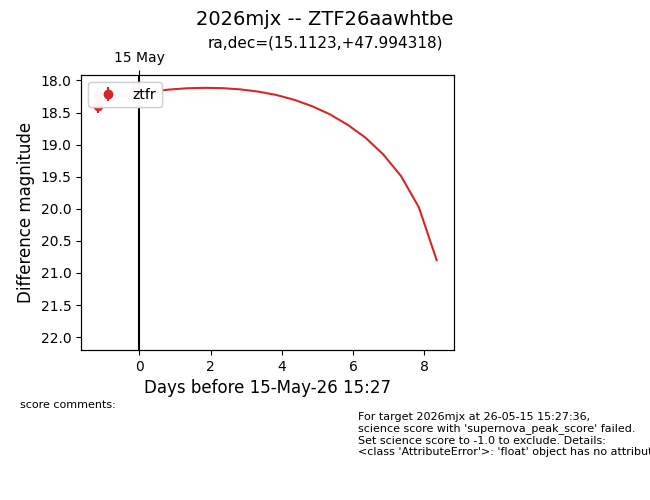
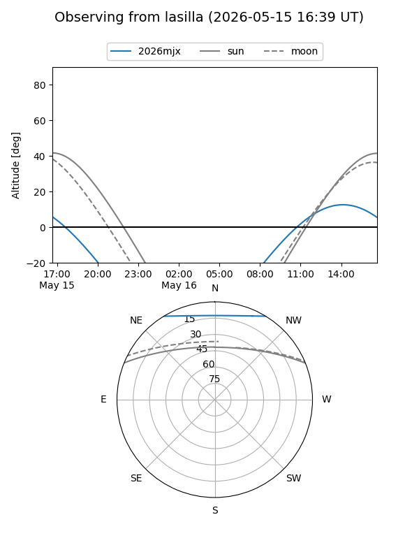
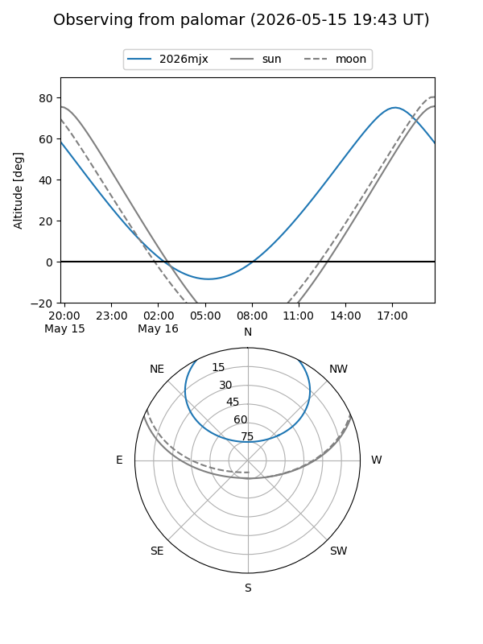
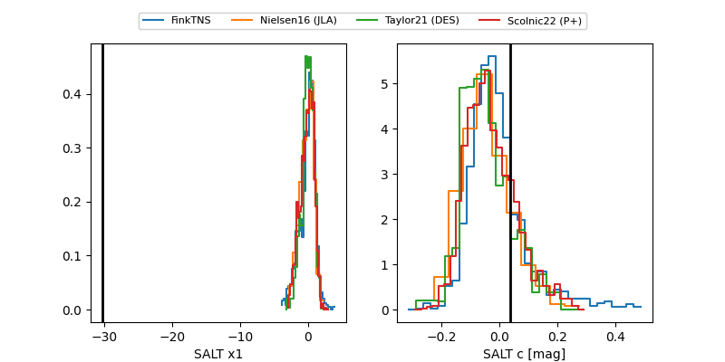

2026mjx
Target 2026mjx at 2026-05-15 15:29
Aliases and brokers:
FINK: link
Lasair: link
ALeRCE: link
TNS: link
YSE: link
alt names
ZTF26aawhtbe (ztf,fink_ztf)
2026mjx (tns,yse)
Coordinates:
equatorial (ra, dec) = 15.1123,+47.99432
equatorial (HMS+DMS) = 01:00:26.95,+47:59:39.55
galactic (l, b) = (124.4914,-14.85014)
Flags:
Photometry:
last ztfr=18.19
5 ztfr detections
Lightcurve

Visibility


Additional plots
